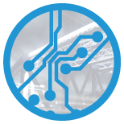

Pangea convida: Arquitetura para Transformação Digital
O PanGea (pangeanet.org) quer turbinar a forte comunidade de arquitetos e desenvolvedores de Belo Horizonte! Para isso, queremos te chamar para ser nosso convidado:
|

|
Agenda
08:00 às 08:30 Registro
08:30 Abertura - Coffe
09:00 às 09:50 Transformação Digital, sua arquitetura está preparada?
10:00 às 10:45 Arquitetura para otimização de legado - Edgar Silva, VP at WSO2
11:00 às 11:45 Arquitetura Microservices - Vantagens e Desvantagens - Fabio Roseto, Sensedia
12:00 às 13:00 Almoço (Pizza)
13:00 às 13:45 Plataforma Digital com Cloud Foundry e Spring Cloud - Victor, Pivotal
14:00 às 14:45 Design de APIs RESTful: uma visão prática com exemplos de mercado - Jose Vahl, Sensedia
15:00 às 15:30 Coffe
15:30 às 16:15 Desafios da Arquitetura Digital, Q&A
16:30 ás 17:00 Fechamento
|
|
|
Aceita nosso convite? Por gentileza, basta entrar aqui (link) e dar SIM!
|